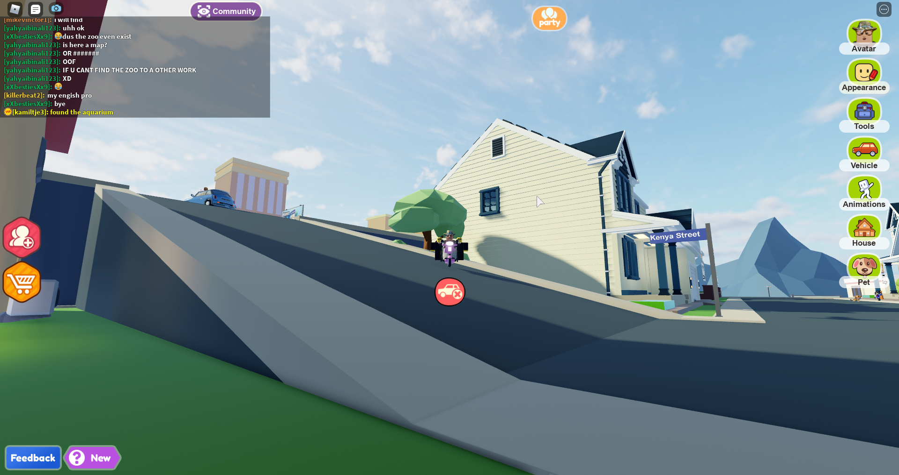

Wat houd het uitje in?
U zult ontvangen worden in het stedelijk museum met een kop koffie of thee.
Vervolgens zal u en uw team uitleg krijgen over het verloop van de activiteiten.
Er zullen 2 hoofdactiviteiten zijn. De eerste activiteit is een rondleiding door een kunst specialist.
Hij of zij is erg kundig en zal jullie van alles vertellen over de kunst.
U krijgt leuke weetjes te weten en de mooie verhalen achter de schilderijen.



"Bekijk, inspireer en creëer"
Als 2e activiteit zult u onder begeleiding van een echte kunstenaar een
van de geselecteerde schilderijen op geheel eigen wijze na gaan maken.
Dit zult u doen in groepjes van 3-6 personen.
Je gaat eerste bedenken welk schilderijen bij jullie past en op wat
voor een manier jullie je eigen draai gaan geven aan het kunstwerk.
Dat kan zijn door het gebruik van hele andere materialen, kleuren, vormen etc.
Je kunt het zo gek maken als je kunt bedenken.
Dit zal afgesloten worden met een kleine uitleg over je kunstwerk voor de rest
van uw collega's onder het genot van een biertje of wijntje